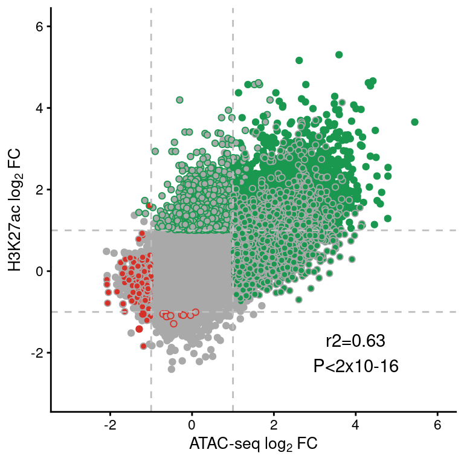
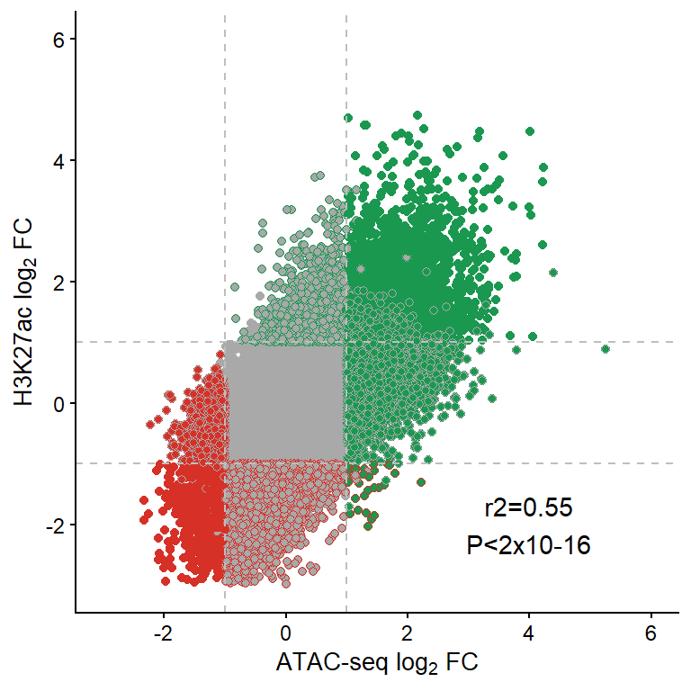
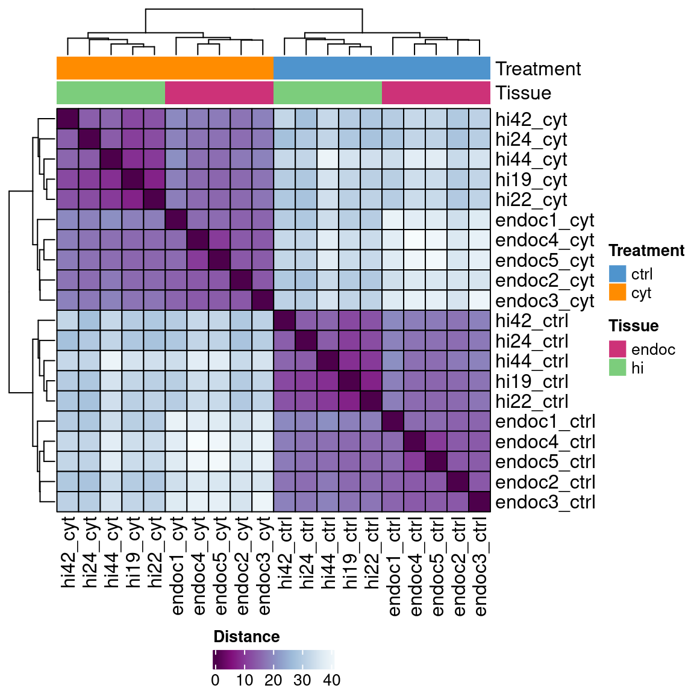
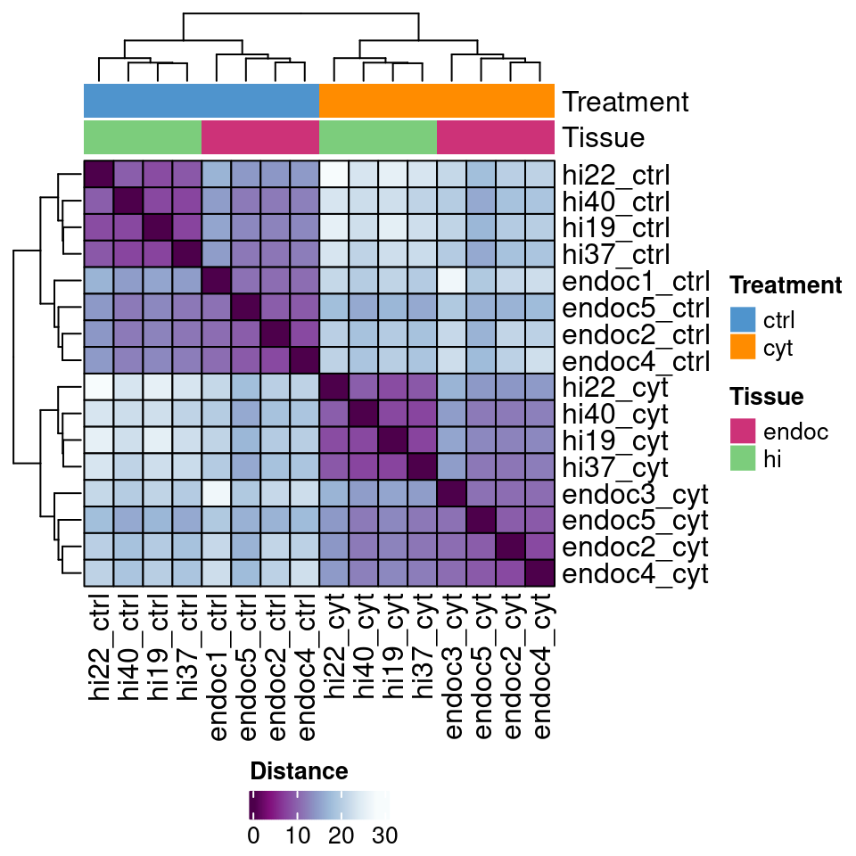
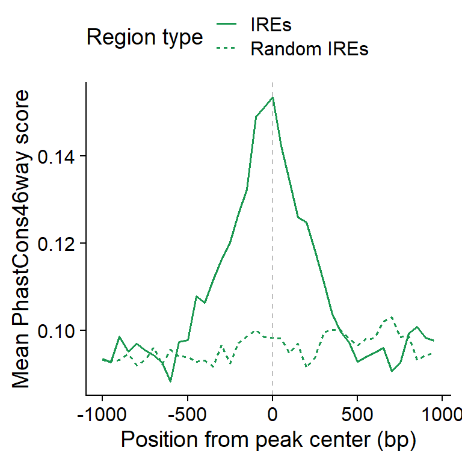

#1 Chromatin remodeling induced by cytokines
Proinflammatory cytokine exposure causes profound remodeling of the β-cell regulatory landscape
Mireia Ramos-Rodríguez
Analysis of ATAC-seq data
Quality control
Run Rscript for generating the necessary quality control measures.
Rscript code/CYT_QC_ATAC.Rload("../data/CYT/ATAC/QC/ATAC_stats.rda")
load("../data/CYT/ATAC/QC/QC_scores.rda")
stats <- dplyr::left_join(stats, txt)
lib <-
ggplot(stats,
aes("Lib Size",
sampleID)) +
geom_tile(aes(fill=total_reads),
color="black", size=1) +
geom_text(aes(label=round(total_reads/1e6, 1))) +
scale_fill_gradient(low="white",
high="purple3",
limits=c(0, max(stats$total_reads)),
breaks=c(0, max(stats$total_reads)),
labels=c("0", "Max"),
name="Library size (x10^6)") +
guides(fill=guide_colourbar(ticks=FALSE,
frame.colour = "black",
frame.linewidth = 1)) +
theme(axis.line.x = element_blank(),
axis.ticks.x = element_blank(),
axis.title = element_blank())
align <-
ggplot(stats,
aes("% Align",
sampleID)) +
geom_tile(aes(fill=alignment_rate),
color="black", size=1) +
geom_text(aes(label=round(alignment_rate, 1))) +
scale_fill_gradient(low="white",
high="darkorange3",
limits=c(0, max(stats$alignment_rate)),
breaks=c(0, max(stats$alignment_rate)),
labels=c(0, "Max"),
name="% alignment") +
guides(fill=guide_colourbar(ticks=FALSE,
frame.colour = "black",
frame.linewidth = 1)) +
theme(axis.text.y=element_blank(),
axis.title=element_blank(),
axis.line=element_blank(),
axis.ticks=element_blank(),
plot.margin=margin(0,0,0,0, unit='pt'))
mit <-
ggplot(stats,
aes("% Mito",
sampleID)) +
geom_tile(aes(fill=chrM_rate),
color="black", size=1) +
geom_text(aes(label=round(chrM_rate, 1))) +
scale_fill_gradient(low="dodgerblue3",
high="white",
limits=c(0, max(stats$chrM_rate)),
breaks=c(0, max(stats$chrM_rate)),
labels=c("0", "Max"),
name="% Mitochondrial") +
guides(fill=guide_colourbar(ticks=FALSE,
frame.colour = "black",
frame.linewidth = 1)) +
theme(axis.text.y=element_blank(),
axis.title=element_blank(),
axis.line=element_blank(),
axis.ticks=element_blank(),
plot.margin=margin(0,0,0,0, unit='pt'))
nsc <-
ggplot(stats,
aes("NSC",
sampleID)) +
geom_tile(aes(fill=NSC),
color="black", size=1) +
geom_text(aes(label=round(NSC, 1))) +
scale_fill_gradient(low="white",
high="indianred4",
limits=c(1, max(stats$NSC)),
breaks=c(1, max(stats$NSC)),
labels=c("1", "Max"),
name="NSC") +
guides(fill=guide_colourbar(ticks=FALSE,
frame.colour = "black",
frame.linewidth = 1)) +
theme(axis.text.y=element_blank(),
axis.title=element_blank(),
axis.line=element_blank(),
axis.ticks=element_blank(),
plot.margin=margin(0,0,0,0, unit='pt'))
rsc <-
ggplot(stats,
aes("RSC",
sampleID)) +
geom_tile(aes(fill=RSC),
color="black", size=1) +
geom_text(aes(label=round(RSC, 1))) +
scale_fill_gradient(low="white",
high="turquoise4",
limits=c(0, max(stats$RSC)),
breaks=c(0, max(stats$RSC)),
labels=c("0", "Max"),
name="RSC") +
guides(fill=guide_colourbar(ticks=FALSE,
frame.colour = "black",
frame.linewidth = 1)) +
theme(axis.text.y=element_blank(),
axis.title=element_blank(),
axis.line=element_blank(),
axis.ticks=element_blank(),
plot.margin=margin(0,0,0,0, unit='pt'))
## Get legend -----------------------
lib.leg <- get_legend(lib)
al.leg <- get_legend(align)
mit.leg <- get_legend(mit)
nsc.leg <- get_legend(nsc)
rsc.leg <- get_legend(rsc)
leg <- plot_grid(lib.leg,
al.leg,
mit.leg,
nsc.leg,
rsc.leg,
nrow=1)
## Create heatmap --------------------------
heat <- plot_grid(lib + theme(legend.position="none"),
align + theme(legend.position="none"),
mit + theme(legend.position="none"),
nsc + theme(legend.position="none"),
rsc + theme(legend.position="none"),
nrow=1,
align='h',
rel_widths=c(0.30, rep(0.1750, 4))
)
## Final plot ----------------
qc <-
plot_grid(heat, leg, nrow=2, rel_heights = c(0.7, 0.3))
qc
Sumary of per-replicate sequencing metrics, showing total library sizes, percentage of aligned reads, percentage of mitochondrial aligned reads, normalized strand cross-correlation coefficient (NSC) and relative strand cross-correlation coefficient (RSC).
load("../data/CYT/ATAC/QC/ATAC_tss_enrichment.rda")
# tss <- ungroup(tss)
# save(tss, file="../data/CYT/ATAC/QC/ATAC_tss_enrichment.rda")
tss$dataset <- factor(tss$dataset, levels=c("TSS annotation", "Random control"))
tss$group <- gsub("[[:digit:]]*_", "_", tss$sample)
tss <- tss %>%
group_by(dataset, group, Position) %>%
summarise(mean=mean(mean))
tss.plot <-
ggplot(tss,
aes(Position, mean)) +
geom_line(aes(group=dataset, color=dataset), lwd=0.7) +
scale_color_manual(values=c("seagreen4", "goldenrod3"), name="Dataset") +
facet_wrap(~group, scales="free_y") +
theme(legend.position="top") +
ylab("Mean ATAC-seq read counts") + xlab("Position relative to TSS (bp)")
tss.plot
Enrichment of ATAC-seq reads around protein-coding TSS compared to a randomized set of regions.
load("../data/CYT/ATAC/QC/ATAC_noise.rda")
# stats <- ungroup(stats)
# save(stats, file="../data/CYT/ATAC/QC/ATAC_noise.rda")
stats$mean.errorbar <- stats$mean
stats <- stats[order(rev(stats$Annotation)),]
stats <- stats[stats$Annotation!="Unassigned",] %>%
group_by(group) %>%
mutate(cumsum=cumsum(mean))
noise <-
ggplot(stats[stats$Annotation!="Unassigned",],
aes(group, mean)) +
geom_bar(aes(fill=Annotation), stat="identity",
position="stack",
color="black", lwd=0.7) +
geom_errorbar(aes(ymin=cumsum, ymax=cumsum+sd,
group=Annotation),
width=.3, lwd=0.5) +
scale_fill_manual(values=c("violetred", "dark orange")) +
scale_y_continuous(name="Percentage of reads in peaks (%)") +
theme(axis.text.x=element_text(angle=30, hjust=1),
legend.position="top",
axis.title.x=element_blank())
noise
Signal-to-noise ratios of ATAC-seq reads located at called peaks vs reads outside peaks.
Rscript code/QC_CORR_genome.R data/CYT/ATAC/BAM/ data/CYT/ATAC/QC/ get_upper_tri <- function(cormat){
cormat[lower.tri(cormat)]<- NA
return(cormat)
}
get_lower_tri <- function(cormat){
cormat[upper.tri(cormat)]<- NA
return(cormat)
}load("../data/CYT/ATAC/QC/COR_10kb_norm.rda")
mat <- counts
cor.mat.ctrl <- get_lower_tri(cor(mat[,grep("ctrl", colnames(mat))], method="pearson"))
ctrl.m <- reshape2::melt(cor.mat.ctrl, na.rm=TRUE)
c.ctrl.atac <-
ggplot(data = ctrl.m, aes(Var2, Var1, fill = value))+
geom_tile(color = "black", lwd=0.7)+
scale_fill_gradient2(low = "white", high = "slateblue4", mid = "skyblue2",
midpoint = 0.5, limit = c(0,1), space = "Lab",
name="Pearson\nCorrelation") +
geom_text(aes(label=round(value, 2)), size=3) +
theme_minimal() +
theme(axis.text.x = element_text(angle = 45, vjust = 1,
size = 12, hjust = 1),
axis.title=element_blank(),
panel.grid.major = element_blank(),
legend.position="none") +
coord_fixed() +
ggtitle("ATAC-seq genome-wide correlation")
cor.mat.cyt <- get_upper_tri(cor(mat[,grep("cyt", colnames(mat))], method="pearson"))
cyt.m <- reshape2::melt(cor.mat.cyt, na.rm=TRUE)
c.cyt.atac <-
ggplot(data = cyt.m, aes(Var2, Var1, fill = value))+
geom_tile(color = "black", lwd=0.7)+
scale_fill_gradient2(low = "white", high = "slateblue4", mid = "skyblue2",
midpoint = 0.5, limit = c(0,1), space = "Lab",
name="Pearson\nCorrelation") +
geom_text(aes(label=round(value, 2)), size=3) +
theme_minimal() +
theme(axis.text.x = element_text(angle = 45, vjust = 1,
size = 12, hjust = 1),
axis.title=element_blank(),
legend.justification = c(1, 0),
legend.position = c(0.6, 0.75),
legend.direction = "horizontal",
panel.grid.major = element_blank()) +
coord_fixed() +
guides(fill = guide_colorbar(barwidth = 7, barheight = 1,
title.position = "top", title.hjust = 0.5))
cor.rep.atac <- plot_grid(c.ctrl.atac, c.cyt.atac)
cor.rep.atac
ATAC-seq correlation using the number of reads in a 10kb binned genome normalized with DESeq2.
Differential analysis
cd data/CYT/ATAC
Rscript ../../code/CYT_diffAnalysis_DESeq2_chrom.R -f 1 -q 0.05 -b TRUE -s hi -e ATAC
Rscript ../../code/CYT_diffAnalysis_DESeq2_chrom.R -f 1 -q 0.05 -b TRUE -s endoc -e ATACload("../data/CYT/ATAC/diffAnalysis/ATAC_endoc_fc1_padj0.05_GRangesBatch.rda")
table(res.gr$type, res.gr$annotation) %>%
knitr::kable(format="html",
format.args = list(big.mark = ","),
caption = "Number of regions classified according to significance and distance to TSS in ATAC-seq EndoC samples.") %>%
kable_styling(full_width = FALSE) %>%
add_header_above(c("Region type" = 1, "Location respect TSS" = 2))| Distal | Promoter | |
|---|---|---|
| gained | 12,240 | 267 |
| lost | 679 | 9 |
| stable | 171,672 | 13,354 |
volc_ec <-
ggplot(data.frame(res.gr),
aes(log2FoldChange, -log10(padj))) +
geom_point(aes(color=type), size=0.4) +
scale_color_manual(values=pals$differential,
name="RE type") +
geom_vline(xintercept=c(1,-1), linetype=2, color="dark grey") +
geom_hline(yintercept=-log10(0.05), linetype=2, color="dark grey") +
xlab(expression(Log[2]*" fold-change")) + ylab(expression(-Log[10]*" FDR adjusted P")) +
ggtitle(expression("ATAC-seq EndoC-"*beta*H1)) +
theme(legend.position="none")load("../data/CYT/ATAC/diffAnalysis/ATAC_hi_fc1_padj0.05_GRangesBatch.rda")
table(res.gr$type, res.gr$annotation) %>%
knitr::kable(format="html",
format.args = list(big.mark = ","),
caption = "Number of regions classified according to significance and distance to TSS in ATAC-seq HI samples.") %>%
kable_styling(full_width = FALSE) %>%
add_header_above(c("Region type" = 1, "Location respect TSS" = 2))| Distal | Promoter | |
|---|---|---|
| gained | 14,505 | 462 |
| lost | 4,544 | 115 |
| stable | 295,383 | 18,090 |
volc_hi <-
ggplot(data.frame(res.gr),
aes(log2FoldChange, -log10(padj))) +
geom_point(aes(color=type), size=0.4) +
scale_color_manual(values=pals$differential,
name="RE type") +
geom_vline(xintercept=c(1,-1), linetype=2, color="dark grey") +
geom_hline(yintercept=-log10(0.05), linetype=2, color="dark grey") +
xlab(expression(Log[2]*" fold-change")) + ylab(expression(-Log[10]*" FDR adjusted P")) +
ggtitle(expression("ATAC-seq HI")) +
theme(legend.position="none")plot_grid(volc_ec,
volc_hi,
ncol=2)
Volcano plots showing the open chromatin sites in EndoC and human islet (HI) samples. The horizontal line denotes the FDR adjusted P-value threshold set at 0.05 and the vertical lines the log2 fold-change thresholds, at -1 and 1. Gained regions are represented in green and lost regions are shown in red.
## Load regions
load("../data/CYT/ATAC/diffAnalysis/ATAC_endoc_fc1_padj0.05_GRangesBatch.rda")
ec <- res.gr
load("../data/CYT/ATAC/diffAnalysis/ATAC_hi_fc1_padj0.05_GRangesBatch.rda")
hi <- res.gr
## Find overlaps
ols <- findOverlaps(hi, ec)
## Get fold-change in HI vs type in EndoC
df <- cbind(data.frame(hi)[queryHits(ols),c(6,8)],
data.frame(ec)[subjectHits(ols),c(13)])
colnames(df)[3] <- "type_ec"
## Plot results
ggplot(df,
aes(type_ec, log2FoldChange)) +
geom_hline(yintercept=c(1,-1), lty=2, color="grey") +
geom_hline(yintercept=0, lty=1, color="grey") +
geom_boxplot(aes(color=type_ec), notch=F, outlier.shape=NA,
lwd=1) +
scale_color_manual(values=pals$differential,
name="RE type") +
scale_y_continuous(name=expression("HI "*log[2]*" FC")) +
theme(legend.position="none",
strip.background = element_rect(fill="white", linetype=1, size=.5, color="black")) +
scale_x_discrete(name=expression("EndoC-"*beta*"H1 region type"),
labels=function(x) Hmisc::capitalize(x)) +
coord_cartesian(ylim=c(-2,3))Boxplot of HI log2FC at ATAC-seq regions classified as gained, lost or stable in EndoC cells. Horizontal dashed lines show the upper and lower log2 FC thresholds.
Analysis of H3K27ac ChIP-seq data
Quality control
Rscript code/QC_CORR_genome.R data/CYT/H3K27ac/BAM/ data/CYT/H3K27ac/QC/load("../data/CYT/H3K27ac/QC/COR_10kb_norm.rda")
mat <- counts
cor.mat.ctrl <- get_lower_tri(cor(mat[,grep("ctrl", colnames(mat))], method="pearson"))
ctrl.m <- reshape2::melt(cor.mat.ctrl, na.rm=TRUE)
c.ctrl.H3K27ac <-
ggplot(data = ctrl.m, aes(Var2, Var1, fill = value))+
geom_tile(color = "black", lwd=0.7)+
scale_fill_gradient2(low = "white", high = "slateblue4", mid = "skyblue2",
midpoint = 0.5, limit = c(0,1), space = "Lab",
name="Pearson\nCorrelation") +
geom_text(aes(label=round(value, 2)), size=3) +
theme_minimal() +
theme(axis.text.x = element_text(angle = 45, vjust = 1,
size = 12, hjust = 1),
axis.title=element_blank(),
panel.grid.major = element_blank(),
legend.position="none") +
coord_fixed() +
ggtitle("H3k27ac genome-wide correlation")
cor.mat.cyt <- get_upper_tri(cor(mat[,grep("cyt", colnames(mat))], method="pearson"))
cyt.m <- reshape2::melt(cor.mat.cyt, na.rm=TRUE)
c.cyt.H3K27ac <-
ggplot(data = cyt.m, aes(Var2, Var1, fill = value))+
geom_tile(color = "black", lwd=0.7)+
scale_fill_gradient2(low = "white", high = "slateblue4", mid = "skyblue2",
midpoint = 0.5, limit = c(0,1), space = "Lab",
name="Pearson\nCorrelation") +
geom_text(aes(label=round(value, 2)), size=3) +
theme_minimal() +
theme(axis.text.x = element_text(angle = 45, vjust = 1,
size = 12, hjust = 1),
axis.title=element_blank(),
legend.justification = c(1, 0),
legend.position = c(0.6, 0.75),
legend.direction = "horizontal",
panel.grid.major = element_blank()) +
coord_fixed() +
guides(fill = guide_colorbar(barwidth = 7, barheight = 1,
title.position = "top", title.hjust = 0.5))
cor.rep.H3K27ac <- plot_grid(c.ctrl.H3K27ac, c.cyt.H3K27ac)
cor.rep.H3K27ac
H3K27ac ChIP-seq correlation using the number of reads in a 10kb binned genome normalized with DESeq2.
Differential analysis
cd data/CYT/H3K27ac
Rscript ../../code/CYT_diffAnalysis_DESeq2_chrom.R -f 1 -q 0.05 -b TRUE -s hi -e H3K27ac
Rscript ../../code/CYT_diffAnalysis_DESeq2_chrom.R -f 1 -q 0.05 -b TRUE -s endoc -e H3K27acload("../data/CYT/H3K27ac/diffAnalysis/H3K27ac_endoc_fc1_padj0.05_GRangesBatch.rda")
table(res.gr$type, res.gr$annotation) %>%
knitr::kable(format="html",
format.args = list(big.mark = ","),
caption = "Number of regions classified according to significance and distance to TSS in H3K27ac EndoC samples.") %>%
kable_styling(full_width = FALSE) %>%
add_header_above(c("Region type" = 1, "Location respect TSS" = 2))| Distal | Promoter | |
|---|---|---|
| gained | 3,180 | 201 |
| lost | 19 | 0 |
| stable | 134,512 | 11,930 |
volc_ec <-
ggplot(data.frame(res.gr),
aes(log2FoldChange, -log10(padj))) +
geom_point(aes(color=type), size=0.4) +
scale_color_manual(values=pals$differential,
name="RE type") +
geom_vline(xintercept=c(1,-1), linetype=2, color="dark grey") +
geom_hline(yintercept=-log10(0.05), linetype=2, color="dark grey") +
xlab(expression(Log[2]*" fold-change")) + ylab(expression(-Log[10]*" FDR adjusted P")) +
ggtitle(expression("H3K27ac EndoC-"*beta*H1)) +
theme(legend.position="none")load("../data/CYT/H3K27ac/diffAnalysis/H3K27ac_hi_fc1_padj0.05_GRangesBatch.rda")
table(res.gr$type, res.gr$annotation) %>%
knitr::kable(format="html",
format.args = list(big.mark = ","),
caption = "Number of regions classified according to significance and distance to TSS in H3K27ac HI samples.") %>%
kable_styling(full_width = FALSE) %>%
add_header_above(c("Region type" = 1, "Location respect TSS" = 2))| Distal | Promoter | |
|---|---|---|
| gained | 4,022 | 219 |
| lost | 5,895 | 250 |
| stable | 110,543 | 11,006 |
volc_hi <-
ggplot(data.frame(res.gr),
aes(log2FoldChange, -log10(padj))) +
geom_point(aes(color=type), size=0.4) +
scale_color_manual(values=pals$differential,
name="RE type") +
geom_vline(xintercept=c(1,-1), linetype=2, color="dark grey") +
geom_hline(yintercept=-log10(0.05), linetype=2, color="dark grey") +
xlab(expression(Log[2]*" fold-change")) + ylab(expression(-Log[10]*" FDR adjusted P")) +
ggtitle(expression("H3K27ac HI")) +
theme(legend.position="none")plot_grid(volc_ec,
volc_hi,
ncol=2)Volcano plots showing the enriched H3K27ac sites in EndoC and human islet (HI) samples. The horizontal line denotes the FDR adjusted P-value threshold set at 0.05 and the vertical lines the log2 fold-change thresholds, at -1 and 1. Gained regions are represented in green and lost regions are shown in red.
## Load regions
load("../data/CYT/H3K27ac/diffAnalysis/H3K27ac_endoc_fc1_padj0.05_GRangesBatch.rda")
ec <- res.gr
load("../data/CYT/H3K27ac/diffAnalysis/H3K27ac_hi_fc1_padj0.05_GRangesBatch.rda")
hi <- res.gr
## Find overlaps
ols <- findOverlaps(hi, ec)
## Get fold-change in HI vs type in EndoC
df <- cbind(data.frame(hi)[queryHits(ols),c(6,8)],
data.frame(ec)[subjectHits(ols),c(13)])
colnames(df)[3] <- "type_ec"
## Plot results
ggplot(df,
aes(type_ec, log2FoldChange)) +
geom_hline(yintercept=c(1,-1), lty=2, color="grey") +
geom_hline(yintercept=0, lty=1, color="grey") +
geom_boxplot(aes(color=type_ec), notch=F, outlier.shape=NA,
lwd=1) +
scale_color_manual(values=pals$differential,
name="RE type") +
scale_y_continuous(name=expression("HI "*log[2]*" FC")) +
scale_x_discrete(name=expression("EndoC-"*beta*"H1 region type"),
labels=function(x) Hmisc::capitalize(x)) +
theme(legend.position="none",
strip.background = element_rect(fill="white", linetype=1, size=.5, color="black")) +
coord_cartesian(ylim=c(-2,3))
Boxplot of HI log2FC at H3K27ac regions classified as gained, lost or stable in EndoC cells. Horizontal dashed lines show the upper and lower log2 FC thresholds.
Defining Induced Regulatory Elements
In EndoC-\(\beta\)H1
load("../data/CYT/ATAC/diffAnalysis/ATAC_endoc_fc1_padj0.05_GRangesBatch.rda")
at <- res.gr
load("../data/CYT/H3K27ac/diffAnalysis/H3K27ac_endoc_fc1_padj0.05_GRangesBatch.rda")
k27 <- res.gr
ols <- findOverlaps(at, k27, maxgap=200)
re <- at[queryHits(ols),]
colnames(mcols(re)) <- paste0("atac.", colnames(mcols(re)))
mcols(k27) <- mcols(k27)[,c(1,3,7,8)]
colnames(mcols(k27)) <- paste0("h3k27ac.", colnames(mcols(k27)))
mcols(re) <- cbind(mcols(re),
mcols(k27)[subjectHits(ols),])
## Create new types of IREs
re$type <- NA
re$type[re$h3k27ac.type=="stable" & re$atac.type=="stable"] <- "SRE"
re$type[re$h3k27ac.type=="gained" & (re$atac.type %in% c("gained", "stable"))] <- "IRE"
dir.create("../data/CYT/REs", F)
save(re, file="../data/CYT/REs/REs_endoc_fc1_padj0.05_granges.rda")
## Create less stringent IREs
re$type <- NA
re$h3k27ac.type[re$h3k27ac.log2FoldChange > 0.8 & re$h3k27ac.padj <= 0.05] <- "gained"
re$type[re$h3k27ac.type=="stable" & re$atac.type=="stable"] <- "SRE"
re$type[re$h3k27ac.type=="gained" & (re$atac.type %in% c("gained", "stable"))] <- "IRE"
save(re, file="../data/CYT/REs/REs_endoc_fc1_padj0.05_granges_k27.8.rda")load("../data/CYT/REs/REs_endoc_fc1_padj0.05_granges.rda")
cor <- cor.test(re$atac.log2FoldChange, re$h3k27ac.log2FoldChange)
re.df <- data.frame(re)[,-c(1:5)]
re.df$type <- factor(re.df$type,
levels=c("SRE", "IRE"))
re.df <- re.df[order(re.df$type),]
ggplot(re.df,
aes(atac.log2FoldChange, h3k27ac.log2FoldChange)) +
geom_point(aes(color=h3k27ac.type,
fill=atac.type), pch=21) +
scale_fill_manual(values=pals$differential) +
scale_color_manual(values=pals$differential) +
geom_vline(xintercept=c(-1,1), lty=2, color="grey") +
geom_hline(yintercept=c(-1,1), lty=2, color="grey") +
annotate("text", x=4, y=-2, label=paste0("r2=", round(cor$estimate, 2),
"\nP<2x10-16")) +
theme(legend.position="none") +
scale_y_continuous(limits=c(-3,6),
name=expression("H3K27ac "*log[2]*" FC")) +
scale_x_continuous(limits=c(-3,6),
name=expression("ATAC-seq "*log[2]*" FC"))
In human islets
load("../data/CYT/ATAC/diffAnalysis/ATAC_hi_fc1_padj0.05_GRangesBatch.rda")
at <- res.gr
load("../data/CYT/H3K27ac/diffAnalysis/H3K27ac_hi_fc1_padj0.05_GRangesBatch.rda")
k27 <- res.gr
ols <- findOverlaps(at, k27, maxgap=200)
re <- at[queryHits(ols),]
colnames(mcols(re)) <- paste0("atac.", colnames(mcols(re)))
mcols(k27) <- mcols(k27)[,c(1,3,7,8)]
colnames(mcols(k27)) <- paste0("h3k27ac.", colnames(mcols(k27)))
mcols(re) <- cbind(mcols(re),
mcols(k27)[subjectHits(ols),])
## Create new types of IREs
re$type <- NA
re$type[re$h3k27ac.type=="stable" & re$atac.type=="stable"] <- "SRE"
re$type[re$h3k27ac.type=="gained" & (re$atac.type %in% c("gained", "stable"))] <- "IRE"
dir.create("../data/CYT/REs", F)
save(re, file="../data/CYT/REs/REs_hi_fc1_padj0.05_granges.rda")
## Create less stringent IREs
re$type <- NA
re$h3k27ac.type[re$h3k27ac.log2FoldChange > 0.8 & re$h3k27ac.padj <= 0.05] <- "gained"
re$type[re$h3k27ac.type=="stable" & re$atac.type=="stable"] <- "SRE"
re$type[re$h3k27ac.type=="gained" & (re$atac.type %in% c("gained", "stable"))] <- "IRE"
save(re, file="../data/CYT/REs/REs_hi_fc1_padj0.05_granges_k27.8.rda")load("../data/CYT/REs/REs_hi_fc1_padj0.05_granges.rda")
cor <- cor.test(re$atac.log2FoldChange, re$h3k27ac.log2FoldChange)
re.df <- data.frame(re)[,-c(1:5)]
re.df$type <- factor(re.df$type,
levels=c("SRE", "IRE"))
re.df <- re.df[order(re.df$type),]
ggplot(re.df,
aes(atac.log2FoldChange, h3k27ac.log2FoldChange)) +
geom_point(aes(color=h3k27ac.type,
fill=atac.type), pch=21) +
scale_fill_manual(values=pals$differential) +
scale_color_manual(values=pals$differential) +
geom_vline(xintercept=c(-1,1), lty=2, color="grey") +
geom_hline(yintercept=c(-1,1), lty=2, color="grey") +
annotate("text", x=4, y=-2, label=paste0("r2=", round(cor$estimate, 2),
"\nP<2x10-16")) +
theme(legend.position="none") +
scale_y_continuous(limits=c(-3,6),
name=expression("H3K27ac "*log[2]*" FC")) +
scale_x_continuous(limits=c(-3,6),
name=expression("ATAC-seq "*log[2]*" FC"))
Clustering
Interestingly, the set of IREs identified in EndoC-\(\beta\)H1 cells allows us to cluster both EndoC-\(\beta\)H1 and Human Islet ATAC-seq and H3K27ac regions according to the suffered treatment and not sample type.
################################################
## Clustering samples according to EndoC IREs ##
################################################
library(DESeq2)
library(BiocParallel)
register(MulticoreParam(4))
## ATAC-seq ------------------------------------
# Create SAF
load("../data/CYT/REs/REs_endoc_fc1_padj0.05_granges.rda")
saf <- data.frame(re)[grep("IRE", re$type),c(1:3,6)]
colnames(saf) <- c("Chr", "Start", "End", "GeneID")
saf$Strand <- "+"
# Get counts at IREs
files <- list.files("../data/CYT/ATAC/BAM",
pattern=".offset.bam$",
full.names=TRUE)
atac <- Rsubread::featureCounts(files,
annot.ext=saf,
nthreads=10)
names <- pipelineNGS::getNameFromPath(files, suffix=".offset.bam")
colnames(atac$counts) <- names
# Normalize with DESeq2
coldata <- data.frame(sample=names,
treatment=unlist(lapply(strsplit(names, "_"),
function(x) x[2])),
batch=unlist(lapply(strsplit(names, "_"),
function(x) x[1])))
coldata$tissue <- gsub("[[:digit:]]*", "", coldata$batch)
dds <- DESeqDataSetFromMatrix(countData=atac$counts,
colData=coldata,
design=~batch+treatment)
dds <- DESeq(dds,
parallel=TRUE)
rld <- rlog(dds)
vsd <- vst(dds)
save(rld,
file=file.path(out_dir, "IREs_ATAC_clustering_rld.rda"))
## H3K27ac -------------------------------------------
# Create SAF
load("../data/CYT/REs/REs_endoc_fc1_padj0.05_granges.rda")
id <- unique(re$h3k27ac.GeneID[grep("IRE", re$type)])
load("../data/CYT/H3K27ac/diffAnalysis/H3K27ac_endoc_fc1_padj0.05_GRangesBatch.rda")
res.gr <- res.gr[res.gr$GeneID %in% id,]
saf <- data.frame(res.gr)[,c(1:3,6)]
colnames(saf) <- c("Chr", "Start", "End", "GeneID")
saf$Strand <- "+"
# Get counts at IREs
files <- list.files("../../data/CYT/H3K27ac/BAM",
pattern=".bam$",
full.names=TRUE)
files <- files[!grepl("raw", files)]
atac <- Rsubread::featureCounts(files,
annot.ext=saf,
nthreads=10)
names <- pipelineNGS::getNameFromPath(files, suffix=".bam")
colnames(atac$counts) <- names
# Normalize with DESeq2
coldata <- data.frame(sample=names,
treatment=unlist(lapply(strsplit(names, "_"),
function(x) x[2])),
batch=unlist(lapply(strsplit(names, "_"),
function(x) x[1])))
coldata$tissue <- gsub("[[:digit:]]*", "", coldata$batch)
dds <- DESeqDataSetFromMatrix(countData=atac$counts,
colData=coldata,
design=~batch+treatment)
dds <- DESeq(dds,
parallel=TRUE)
rld <- rlog(dds)
save(rld,
file=file.path(out_dir, "IREs_H3K27ac_clustering_rld.rda"))load(file.path(out_dir, "IREs_ATAC_clustering_rld.rda"))
mat <- assay(rld)
mat <- limma::removeBatchEffect(mat, rld$batch)
colors <- colorRampPalette( rev(RColorBrewer::brewer.pal(9, "BuPu")) )(255)
rows <- data.frame("Treatment"=rld$treatment,
"Tissue"=rld$tissue)
ha = HeatmapAnnotation(df = rows,
col = list(Treatment = c(cyt="dark orange", ctrl="steelblue3"),
Tissue = c(endoc="violetred3", hi="palegreen3")))
sampleDists <- dist(t(mat), method="euclidean")
sampleDistMatrix <- as.matrix(sampleDists)
hclust <- hclust(sampleDists)
heat <- Heatmap(sampleDistMatrix+1,
col=colors,
heatmap_legend_param = list(title = "Distance",
color_bar = "continuous",
legend_direction="horizontal"),
top_annotation=ha,
rect_gp = gpar(col= "black"),
cluster_rows=hclust,
cluster_columns=hclust)
draw(heat, heatmap_legend_side = "bottom", annotation_legend_side = "right")
load(file.path(out_dir, "IREs_H3K27ac_clustering_rld.rda"))
rld$batch[1] <- "endoc3"
mat <- assay(rld)
mat <- limma::removeBatchEffect(mat, rld$batch)Coefficients not estimable: batch8 colors <- colorRampPalette( rev(RColorBrewer::brewer.pal(9, "BuPu")) )(255)
rows <- data.frame("Treatment"=rld$treatment,
"Tissue"=rld$tissue)
ha = HeatmapAnnotation(df = rows,
col = list(Treatment = c(cyt="dark orange", ctrl="steelblue3"),
Tissue = c(endoc="violetred3", hi="palegreen3")))
sampleDists <- dist(t(mat), method="euclidean")
sampleDistMatrix <- as.matrix(sampleDists)
hclust <- hclust(sampleDists)
heat <- Heatmap(sampleDistMatrix+1,
col=colors,
heatmap_legend_param = list(title = "Distance",
color_bar = "continuous",
legend_direction="horizontal"),
top_annotation=ha,
rect_gp = gpar(col= "black"),
cluster_rows=hclust,
cluster_columns=hclust)
draw(heat, heatmap_legend_side = "bottom", annotation_legend_side = "right")
Characterization of IREs in EndoC-\(\beta\)H1
load("../data/CYT/REs/REs_endoc_fc1_padj0.05_granges.rda")
re.df <- data.frame(re)[,-c(1:5)]
t <- table(re.df$type, re.df$atac.annotation)
t
Distal Promoter
IRE 3594 204
SRE 70391 9982## Make groups
re.tss <- unique(re.df[!is.na(re.df$type),])
re.tss$anno.group <- NA
re.tss$anno.group[abs(re.tss$atac.distanceToTSS)>200e3] <- ">200kb"
re.tss$anno.group[abs(re.tss$atac.distanceToTSS)<=200e3 &
abs(re.tss$atac.distanceToTSS)>20e3] <- "20-200kb"
re.tss$anno.group[abs(re.tss$atac.distanceToTSS)<=20e3 &
abs(re.tss$atac.distanceToTSS)>2e3] <- "2-20kb"
re.tss$anno.group[abs(re.tss$atac.distanceToTSS)<=2e3] <- "0-2kb"
len.ire <- sum(grepl("IRE", re.tss$type))
len.sre <- sum(grepl("SRE", re.tss$type))
sum.tss <- re.tss %>%
group_by(type, anno.group) %>%
summarise(num=length(unique(atac.GeneID)))
sum.tss$perc <- NA
sum.tss$perc[grep("IRE", sum.tss$type)] <- sum.tss$num[grep("IRE", sum.tss$type)]/len.ire*100
sum.tss$perc[grep("SRE", sum.tss$type)] <- sum.tss$num[grep("SRE", sum.tss$type)]/len.sre*100
sum.tss$anno.group <- factor(sum.tss$anno.group,
levels=c("0-2kb", "2-20kb", "20-200kb", ">200kb"))
tss.plot <-
ggplot(sum.tss,
aes(anno.group, perc)) +
geom_bar(aes(fill=type), color="black", lwd=0.7, stat="identity", position="dodge") +
geom_vline(xintercept=1.5, lty=2, color="dark red") +
scale_fill_manual(values=pals$re,
name="RE type", labels=function(x) paste0(x, "s")) +
theme(legend.position="top") +
xlab("Distance to TSS") +
scale_y_continuous(name="Percentage of RE",
labels=function(x) paste0(x, "%"),
breaks=scales::pretty_breaks())
tss.plot
scope=1e3
bin=50
ire <- re[grep("IRE", re$type),]
rnd <- regioneR::randomizeRegions(ire)
ire.cons <- pipelineNGS::calculateMeanCons(ire,
scope=scope,
bin=bin)
ire.cons$re_type <- "IREs"
rnd.cons <- pipelineNGS::calculateMeanCons(rnd,
scope=scope,
bin=bin)
rnd.cons$re_type <- "Random IREs"
ire.cons <- rbind(ire.cons, rnd.cons)
save(ire.cons, file=file.path(out_path, "IRE_endoc_fc1_conservation.rda"))load(file.path(out_dir, "IRE_endoc_fc1_conservation.rda"))
cons.plot <-
ggplot(ire.cons,
aes(position, meanCons)) +
geom_line(aes(lty=re_type), lwd=0.7, color=pals$re["IRE"]) +
scale_linetype_discrete(name="Region type") +
geom_vline(xintercept=0, lty=2, color="grey") +
ylab("Mean PhastCons46way score") +
xlab("Position from peak center (bp)") +
theme(legend.position = "top") +
guides(linetype=guide_legend(nrow=2))
cons.plot
library(maRge)
out_homer <- file.path(out_dir, "HOMER_IREs_endoc_fc1_padj0.05_mask/")
deNovoMotifHOMER(bed=paste0("../data/CYT/bedfiles/IREs_endoc_fc1_padj0.05.bed"),
path_output=out_homer,
other_param="-mask",
path_homer="~/tools/homer/")htmltools::includeHTML(file.path(out_dir, "HOMER_IREs_endoc_fc1_padj0.05_mask/homerResults.html"))
sessionInfo()R version 4.0.0 (2020-04-24)
Platform: x86_64-w64-mingw32/x64 (64-bit)
Running under: Windows 10 x64 (build 18362)
Matrix products: default
locale:
[1] LC_COLLATE=Spanish_Spain.1252 LC_CTYPE=Spanish_Spain.1252
[3] LC_MONETARY=Spanish_Spain.1252 LC_NUMERIC=C
[5] LC_TIME=Spanish_Spain.1252
attached base packages:
[1] grid parallel stats4 stats graphics grDevices utils
[8] datasets methods base
other attached packages:
[1] DESeq2_1.29.4 SummarizedExperiment_1.19.4
[3] DelayedArray_0.15.1 matrixStats_0.56.0
[5] Biobase_2.49.0 ComplexHeatmap_2.5.3
[7] dplyr_1.0.0 kableExtra_1.1.0
[9] cowplot_1.0.0 ggplot2_3.3.1
[11] GenomicRanges_1.41.1 GenomeInfoDb_1.25.0
[13] IRanges_2.23.5 S4Vectors_0.27.8
[15] BiocGenerics_0.35.2 workflowr_1.6.2
loaded via a namespace (and not attached):
[1] bitops_1.0-6 fs_1.4.1 bit64_0.9-7
[4] webshot_0.5.2 RColorBrewer_1.1-2 httr_1.4.1
[7] rprojroot_1.3-2 tools_4.0.0 backports_1.1.7
[10] R6_2.4.1 rpart_4.1-15 Hmisc_4.4-0
[13] DBI_1.1.0 colorspace_1.4-1 nnet_7.3-14
[16] GetoptLong_1.0.2 withr_2.2.0 gridExtra_2.3
[19] tidyselect_1.1.0 bit_1.1-15.2 compiler_4.0.0
[22] git2r_0.27.1 rvest_0.3.6 htmlTable_2.0.1
[25] xml2_1.3.2 labeling_0.3 checkmate_2.0.0
[28] scales_1.1.1 readr_1.3.1 genefilter_1.71.0
[31] stringr_1.4.0 digest_0.6.25 foreign_0.8-80
[34] rmarkdown_2.3 XVector_0.29.1 jpeg_0.1-8.1
[37] base64enc_0.1-3 pkgconfig_2.0.3 htmltools_0.5.0
[40] limma_3.45.9 highr_0.8 htmlwidgets_1.5.1
[43] rlang_0.4.6 GlobalOptions_0.1.2 rstudioapi_0.11
[46] RSQLite_2.2.0 shape_1.4.4 generics_0.0.2
[49] farver_2.0.3 BiocParallel_1.23.0 acepack_1.4.1
[52] RCurl_1.98-1.2 magrittr_1.5 Formula_1.2-3
[55] GenomeInfoDbData_1.2.3 Matrix_1.2-18 Rcpp_1.0.4.6
[58] munsell_0.5.0 lifecycle_0.2.0 stringi_1.4.6
[61] yaml_2.2.1 zlibbioc_1.35.0 plyr_1.8.6
[64] blob_1.2.1 promises_1.1.0 crayon_1.3.4
[67] lattice_0.20-41 splines_4.0.0 annotate_1.67.0
[70] circlize_0.4.10 hms_0.5.3 locfit_1.5-9.4
[73] knitr_1.28 pillar_1.4.4 rjson_0.2.20
[76] reshape2_1.4.4 geneplotter_1.67.0 XML_3.99-0.3
[79] glue_1.4.1 evaluate_0.14 latticeExtra_0.6-29
[82] data.table_1.12.8 png_0.1-7 vctrs_0.3.0
[85] httpuv_1.5.3.1 gtable_0.3.0 purrr_0.3.4
[88] clue_0.3-57 xfun_0.14 xtable_1.8-4
[91] later_1.0.0 survival_3.1-12 viridisLite_0.3.0
[94] tibble_3.0.1 AnnotationDbi_1.51.0 memoise_1.1.0
[97] cluster_2.1.0 ellipsis_0.3.1